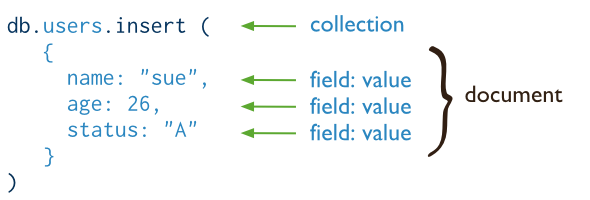

End-to-End JavaScript
with the

stack
By João Silva for the CERN Spring Campus 2014
University of Oviedo, Gijón, Spain
Who am I?
{
"name": "João Silva",
"country": "Portugal",
"employer": "CERN",
"title": "Software Engineer",
"technologies": [
"Java",
"JavaScript",
"Groovy",
"Grails",
"Activiti Workflow"
],
"email": "joao.p.silva@cern.ch"
}History

→
The Dawn of JavaScript

Netscape Navigator
Historical Background
- Created in 1995 by Brendan Eich of Netscape
- Mocha → LiveScript → JavaScript
- Influenced by Scheme and Self
- First-class functions
- Closures
- Prototypes
- Object literals and array literals
Glue language
- Form validations
- Adding interactivity to web pages
Browser Wars
Internet Explorer vs Netscape Navigator

ECMAScript
standardize the syntax and semantics of a general purpose, cross-platform, vendor-neutral scripting language
Server-side JavaScript
- Netscape LiveWire (1996)
- Rhino (1997)
- Microsoft IIS (1997)
- Several others since
What went wrong?
- Slow engines
- JavaScript's perception as a plumbing language
- Lack of tooling
- Better alternatives
What has changed?

Faster Engines (V8)

Google's open source JavaScript engine
V8 features
- Written in C++
- Compiles JavaScript directly into machine code
- Runtime profiler which identifies hot functions
- Can run standalone or can be embedded as a library

Better tooling
- Module system (CommonJS, AMD)
- Test frameworks (QUnit, Jasmine)
- Code quality (JSLint, JSHint)
- Dependency management (bower, npm)
- Task runner (Grunt)
- etc.
JavaScript is cool now
- Top Language on GitHub for 2013 (> 250k repositories)
- Used for Web servers, Desktop applications, Presentations...
...Games
End-to-End JavaScript
The MEAN Stack
Monoglot programming
node.js

Server-side JavaScript
What is node.js?
Node.js is a platform built on Chrome's JavaScript runtime for easily building fast, scalable network applications. Node.js uses an event-driven, non-blocking I/O model that makes it lightweight and efficient, perfect for data-intensive real-time applications that run across distributed devices.
The cost of I/O

Source: Ryan Dahl's JSConf node.js presentation
Waiting...
var results = db.query('select * from bigtable'); // Blocking
// Process results
fs.writeFile('/var/log/', 'bla');
var response = JSON.stringify(results);
Most web applications are I/O bound, not CPU bound
Node.js was designed to exploit this imbalance
Scaling with threads

- Context-switching overhead
- Execution stacks take up memory
- C10k problem
Scaling with processes
- Process scheduling overhead
- High memory usage
Scaling with an event loop

- Single-threaded
- Leverages asynchronous I/O APIs of the host OS
- Never blocks for I/O operations
- Handles large number of concurrent connections
The node.js Event Loop

Blocking I/O
var results = db.query('select * from bigtable');
// Process results
Non-blocking I/O
db.query('select * from bigtable', function(results) {
// Process results
});
JavaScript fits perfectly the event loop model with first-class functions and closures
node.js architecture
Examples
Reading a file
var fs = require('fs');
fs.readFile('hello.txt', function(err, data) {
if (err) throw err;
console.log(data);
});
TCP Echo Server
var net = require('net');
var server = net.createServer(function (socket) {
socket.write('Welcome to the echo server\r\n');
socket.pipe(socket);
});
server.listen(1337);
HTTP Server
var http = require('http');
var server = http.createServer(function (request, response) {
response.writeHead(200, {'Content-Type': 'text/html'});
response.end('<h1>Hello World</h1>');
});
server.listen(1337);
console.log('Server running at http://127.0.0.1:1337/');
Summary
- Server-side JavaScript environment
- Uses Chrome's V8 engine
- Event-driven
- Non-blocking I/O
- Single-threaded event loop
Express

web application framework for node.js
What is Express?
Express is a minimal and flexible node.js web application framework, providing a robust set of features for building single and multi-page, and hybrid web applications.
Web application with node.js
var http = require("http");
var fs = require("fs");
http.createServer(function(req, res) {
// Homepage
if (req.url == "/") {
res.writeHead(200, { "Content-Type": "text/html" });
res.end("Welcome to the homepage!");
}
// About page
else if (req.url == "/about") {
res.writeHead(200, { "Content-Type": "text/html" });
fs.readFile(__dirname + "/about.html", function (err, data) {
res.end(data);
});
}
// 404'd!
else {
res.writeHead(404, { "Content-Type": "text/plain" });
res.end("404 error! File not found.");
}
}).listen(1337);
Web application with Express
var express = require("express");
var app = express();
app.get("/", function(request, response) {
response.send("<h1>Welcome to the home page!</h1>");
});
app.get("/about", function(request, response) {
response.render("about.html");
});
app.all("*", function(request, response) {
response.send(404, "404 error! File not found.");
});
app.listen(1337);
Express Features

Routing
Map different requests to specific handlers
var express = require("express");
var app = express();
app.post("/action/:id?", function(request, response) {
var id = request.params.id;
response.send(id ? "hello " + id : "hello");
});
app.get("/json", function(request, response) {
response.send({ foo: "bar" });
});
app.all("*", function(request, response) {
response.send(404, "404 error! File not found.");
});
app.listen(1337);
Handling Form Data
var express = require('express');
var bodyParser = require('body-parser');
var app = express();
app.use(bodyParser());
app.get('/', function(req, res) {
res.send('<form method="post" action="/">' +
'Name: <input type="text" name="username" />' +
'<input type="submit" />' +
'</form>');
});
app.post('/', function(req, res) {
// Always sanitize your data to prevent XSS, remember Derek's presentation!
res.send('¡Bienvenido!, ' + sanitize(req.body.username));
});
app.listen(1337);
View Rendering
doctype html
html(lang="en")
head
title =pageTitle
body
h1 Welcome to the #{pageTitle}!
p Jade is a cool, high-performance templating engine for Node.js.
var express = require('express');
var app = express();
app.get('/', function(req, res) {
res.render('index.jade', { pageTitle: 'CERN Spring Campus 2014' });
});
Layouts and partial views
html
body
h1 Profound Quotes
block content
extends layout
block content
p The cave that you fear to enter holds the treasure you seek.
var express = require('express');
var app = express();
app.set('view engine', 'jade');
app.get('/', function(req, res) {
res.render('quotes');
});
Layouts and partial views
<!DOCTYPE html>
<html>
<body>
<h1>Profound Quotes</h1>
<p>The cave that you fear to enter holds the treasure you seek.</p>
</body>
</html>
Middleware
Middle layer between Express and the network
var express = require('express');
var app = express();
// A middleware is a function (request handler) with three arguments
var ensureAuthenticated = function(req, res, next) {
if (req.isAuthenticated()) {
var username = req.username;
req.user = User.findByUsername(username);
return next();
}
return res.redirect("/login");
};
app.use(ensureAuthenticated);
app.get('/', function(req, res) {
res.send('Welcome ' + req.user);
});
- Authentication
- Error handling
- Session
- Authorization
- Security
- Sanitization of input
Configuration
app.configure(function () {
app.set('views', __dirname + '/views');
app.use(staticProvider(__dirname + '/public');
app.use(bodyParser());
app.use(csrf());
app.use(session());
});
app.configure('development', function () {
app.use(errorHandler({
dumpExceptions: true,
showStack: true
});
app.disable('emails');
});
app.configure('production', function () {
app.use(errorHandler());
app.enable('emails');
});
Summary
- Web application framework for node.js
- Routing
- Templating engines (Jade, EJS, HAML, etc.)
- Layouts and partial views
- Middleware (authentication, security, and much more)
- Environment-based configuration
MongoDB

open-source document database
What is MongoDB?
MongoDB (from "humongous") is an open-source document database, and the leading NoSQL database.
#NoSQL

Next Generation Databases mostly addressing some of the points: being non-relational, distributed, open-source and horizontally scalable.
Non-relational

Source: http://martinfowler.com/bliki/AggregateOrientedDatabase.html
NoSQL Flavours
- Graph-oriented databases (Neo4j)
- Aggregate-oriented databases
- Key-Value Store (redis)
- Column Store (Cassandra)
- Document Store (MongoDB)
Document-oriented database
Data stored as whole documents
- Documents are independent units
- Application logic is easier to write (reduced impedance mismatch)
- Unstructured data can be stored easily (schema-less)
Source: http://docs.mongodb.org/manual/core/crud-introduction/
MongoDB Features
- Documented-oriented database
- Auto-sharding for horizontal scalability
- Built-in replication for high availability
- Schema-less
- Map-Reduce aggregation
- Documents are stored as BSON, a binary variant of JSON
MongoDB Terminology
Data Model Design

Data Model Design
1. Embedded Data Models
- Use when there are "contains" relationships between entities
- Use when there are one-to-many relationships between entities, and the "many" always appears with the parent document
Data Model Design
2. Normalized Data Models using References

- Use when embedding would result in duplication
- Use to represent complex many-to-many relationships
Read operations
Source: http://docs.mongodb.org/manual/core/read-operations-introduction/
Query Interface
db.collection.find()

SQL
Write operations
Source: http://docs.mongodb.org/manual/core/write-operations-introduction/
Create
db.collection.insert()

SQL
Update
db.collection.update()

SQL

Delete
db.collection.remove()
SQL

Map-Reduce
db.collection.mapReduce()

Summary
- Non-relational, documented-oriented database
- Flexible schema
- Powerful query language
- Scale horizontally with auto-sharding
- Built-in replication
- Map-Reduce for aggregation
AngularJS

Superheroic JavaScript MVW Framework
What is AngularJS?
AngularJS is what HTML would have been, had it been designed for building web-apps. Declarative templates with data-binding, MVW, MVVM, MVC, dependency injection and great testability story all implemented with pure client-side JavaScript!
Hola Mundo, AngularJS
<!DOCTYPE html>
<html>
<head>
<title>Hola Mundo, AngularJS - CERN Spring Campus 2014</title>
<script type="text/javascript" src="angular.min.js"></script>
</head>
<body ng-app>
Name: <input type="text" ng-model="name" />
<h1>Hola {{ name }}</h1>
</body>
</html>
Demo
AngularJS Features

Two-way Data binding
Automatic synchronization of data between the model and view components

Filters
Formats the value of an expression for display to the user
{{ expression | filter1 | filter2 }}<body ng-app>
Name: <input type="text" ng-model="name" />
<h1>Hello {{ name }}</h1>
<h4>Hello {{ name | uppercase }}</h4>
<h4>Hello {{ name | lowercase }}</h4>
</body>
Demo
Controllers
Contains presentation logic and binds the view with the model using scopes
<div ng-controller="ChatController">
Message: <input type="text" ng-model="newMessage"/>
<button ng-click="add()">Add</button>
<h2>Messages</h2>
<ul>
<li ng-repeat="message in messages"> {{ message }} </li>
</ul>
</div>
function ChatController($scope) {
$scope.messages = ["I <3 sidra", "Save the whales!"];
$scope.add = function() {
$scope.messages.push($scope.newMessage);
$scope.newMessage = "";
}
}
Controllers
Demo
Modules
Logical entities used to structure your application
var myModule = angular.module('myModule',[]);
myModule.controller('ChatController', function($scope) {
// Controller logic
});
Services
Singleton objects or functions that carry out specific tasks
var chatApp = angular.module('chatApp', []);
chatApp.service('ChatService', function() {
this.getLastMessages = function() {
// Ajax call to read messages from database
return [
"I <3 sidra",
"Save the whales!"
]
}
this.saveMessage = function(message) {
// Ajax call to save message to the database
}
});
Dependency injection
Components are created by the container and provided (injected) as requested
var chatApp = angular.module('chatApp', []);
chatApp.service('ChatService', function() {
// ...
});
chatApp.controller('ChatController', function($scope, ChatService) {
$scope.messages = ChatService.getLastMessages();
$scope.add = function() {
ChatService.save($scope.newMessage);
$scope.messages.push($scope.newMessage);
$scope.newMessage = "";
}
});
- Reduces the tight coupling of code
- Creates modular code that is more maintanable and testable
Directives
Extend the HTML vocabulary
<pacman></pacman>
var app = angular.module('app',[]);
app.directive('pacman', function() {
return {
restrict: 'E', // E = Element, A = Attribute, C = Comment
replace: true,
template: "<div><img src='pacman.gif'/></div>"
};
});

The return of the <blink> tag
var blink = angular.module('blink', [])
.directive('blink', function($timeout) {
return {
restrict: 'E',
transclude: true,
scope: {},
controller: function($scope, $element) {
function showElement() {
$element.css("display", "inline");
$timeout(hideElement, 1000);
}
function hideElement() {
$element.css("display", "none");
$timeout(showElement, 1000);
}
showElement();
},
template: '',
replace: true
}
});
The return of the <blink> tag
Summary
- Client-side MVC framework
- Two-way data binding
- Dependency injection
- Modular
- Filters
- Services
- Directives
- ... and much more
Summary

Muchas gracias